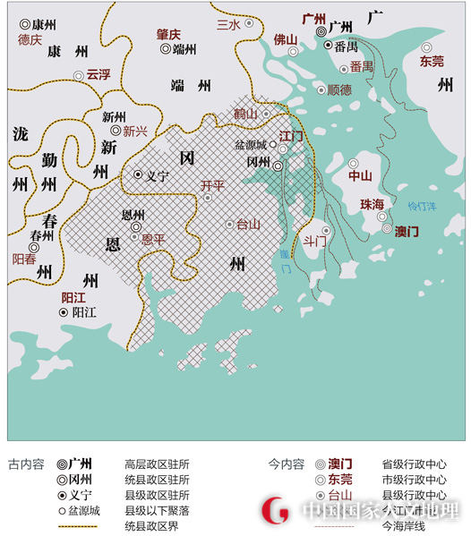

先秦时期，江门属南越地。汉代，今江门市区、鹤山、台山一带属南海郡，恩平、开平属合浦郡。三国时，孙吴在今新会设置平夷县，在今恩平设置思平县，是江门建置之始。南朝刘宋时，于今江门一带设置新会郡。
隋初省并州郡，改新会郡为冈州，辖今江门市区、台山、开平、鹤山一带。隋唐两代，冈州多次建置、撤并，逐渐成为江门地区的一个代称，不少海外的江门侨社即以“冈州”冠名。
晚唐至清，江门市区、台山一带长期隶属广州，开平、恩平一带长期隶属设治在肇庆、阳江等地的州府。
江门市区因地处西江与其支流蓬江的汇合处，江南的烟墩山和江北的蓬莱山对峙如门，故名“江门”。早在元末明初，这里便形成墟集。清康熙二十三年（1685年），粤海关成立，在江门设立正税口，俗称“江门常关”。
